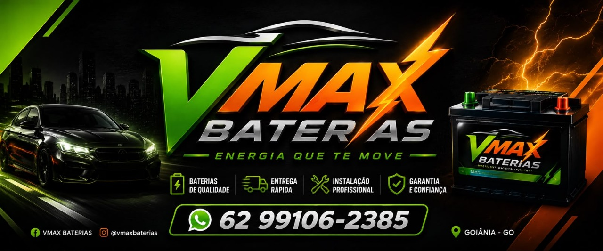
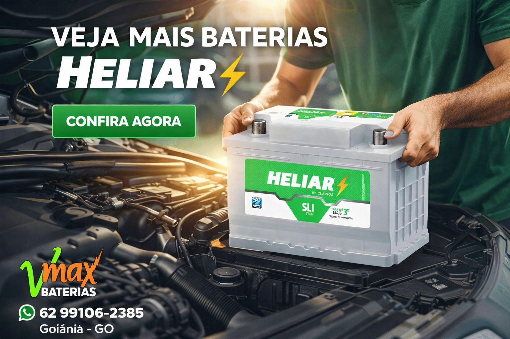
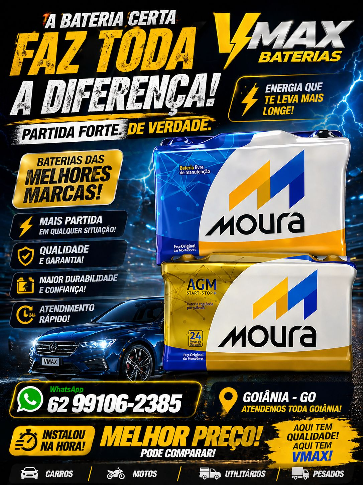
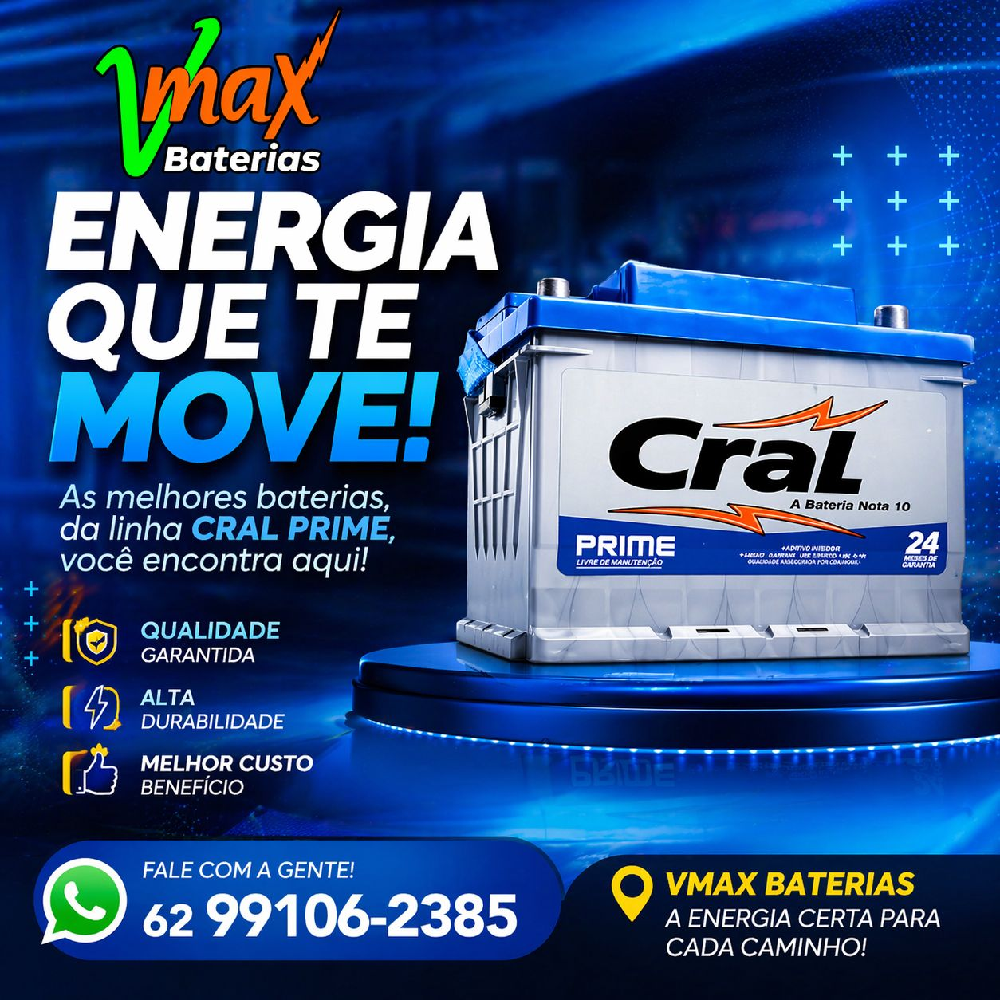
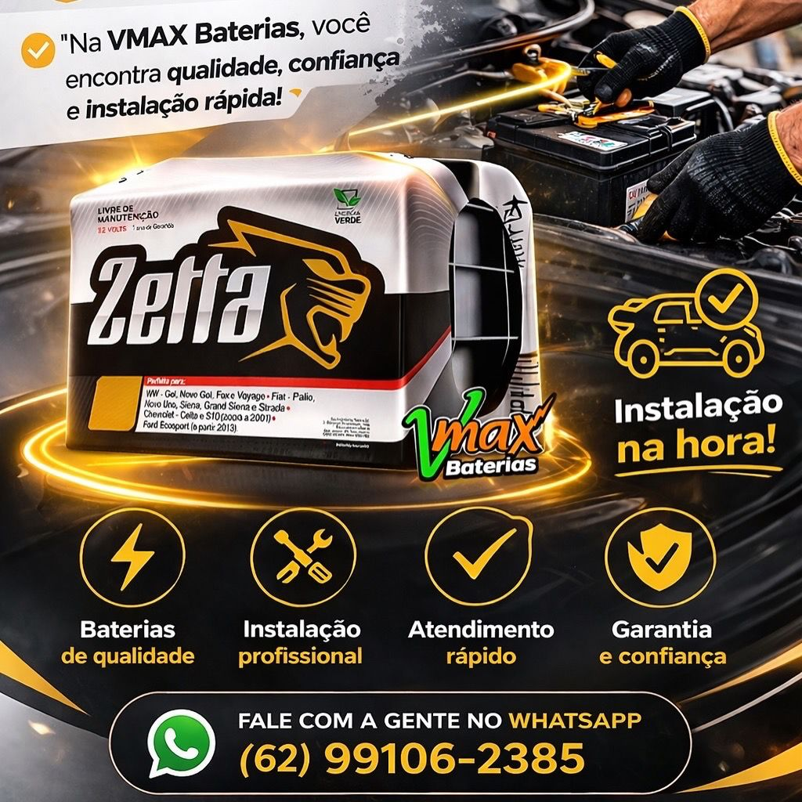
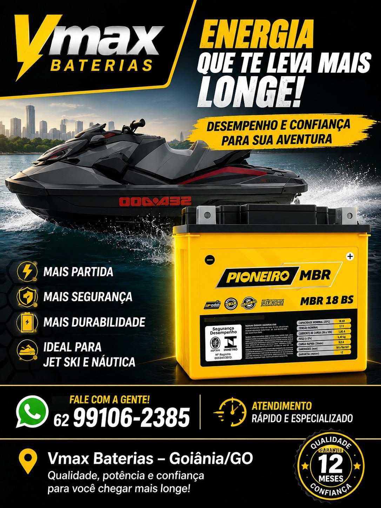
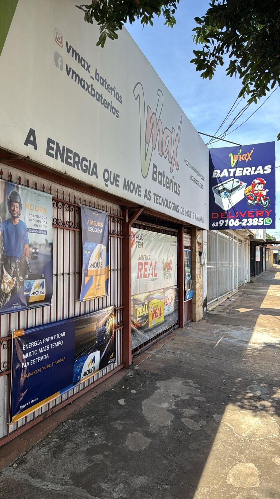
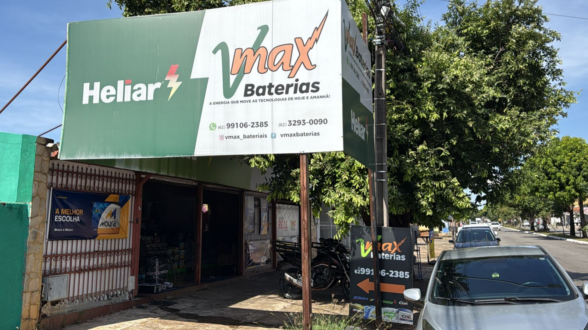

Heliar
Moura
ACDelco
CRAL
Pioneiro
Zetta
Heliar
Moura
ACDelco
CRAL
Pioneiro
Zetta
Heliar
Moura
ACDelco
CRAL
Pioneiro
Zetta
Heliar
Moura
ACDelco
CRAL
Pioneiro
Zetta
Heliar
Moura
ACDelco
CRAL
Pioneiro
Zetta
Heliar
Moura
ACDelco
CRAL
Pioneiro
Zetta
Troca com agilidade para quem não pode parar.
Atendimento pensado para resolver a bateria descarregada com rapidez, entrega e instalação no local.
Linhas para uso urbano, trabalho pesado e aplicações especiais.
Carros, motos, caminhões, utilitários, máquinas agrícolas, jet ski e demandas de frota em um só atendimento.
Orientação para escolher a bateria certa com melhor custo-benefício.
A equipe ajuda a encontrar a opção mais adequada para o perfil do veículo e da rotina de uso.
Produtos em destaque
Uma vitrine organizada para encontrar a bateria ideal por aplicação.
A VMax reúne marcas reconhecidas e linhas para diferentes perfis de uso. Filtre por categoria e veja opções para passeio, trabalho, moto, náutica e atendimento imediato.
Marcas atendidas
Heliar, Moura, ACDelco, CRAL, Pioneiro e Zetta
Aplicações
carros, motos, caminhões, utilitários, frotas e linha agrícola

Carros
Heliar para quem busca desempenho e partida confiável no dia a dia.
Indicação frequente para veículos de passeio com foco em confiança, instalação rápida e pronta entrega.

Trabalho pesado
Moura para carros, utilitários, pesados e rotinas que exigem mais durabilidade.
Boa escolha para quem precisa manter o veículo de trabalho disponível e com resposta forte na partida.

Carros
CRAL Prime com equilíbrio entre qualidade, durabilidade e custo-benefício.
Opção procurada por clientes que querem rendimento confiável com excelente relação entre preço e performance.

Troca imediata
Instalação no local para resolver a troca com praticidade e segurança.
Atendimento pensado para quem precisa voltar a ligar o veículo rápido, sem perder tempo procurando solução.

Jet ski e náutica
Pioneiro para usos especiais com mais energia, segurança e durabilidade.
Alternativa voltada para aplicações náuticas e esportivas que pedem desempenho consistente.
Linha especial
Soluções para jet ski e aplicações de lazer com suporte para escolha da linha correta.
A VMax também atende demandas específicas com opções voltadas para performance e uso recreativo.

Frotas e atendimento rápido
Loja preparada para atender desde clientes particulares até veículos comerciais e rotinas de frota.
Venda, entrega e instalação com apoio para escolher a bateria ideal para cada necessidade de uso em Goiânia e região.
Como funciona o atendimento
Um processo direto para entregar energia nova sem complicação.
Você chama
Envie a necessidade pelo WhatsApp e informe o veículo ou a aplicação da bateria.
A equipe orienta
A VMax ajuda a definir a melhor linha entre marcas reconhecidas e opções com ótimo custo-benefício.
A solução chega
Entrega e instalação no local para você seguir a rotina com mais tranquilidade e segurança.

Loja e atendimento
Estrutura pronta para atender Goiânia com rapidez e confiança.
A VMax Baterias é especializada na venda, instalação e entrega de baterias automotivas, com suporte para clientes particulares, veículos de trabalho, frotas e aplicações específicas. O compromisso diário é unir agilidade, produtos de qualidade e orientação especializada.
Reconhecimento construído com atendimento de excelência, agilidade e atenção à necessidade de cada cliente.
Carros, motos, caminhões, máquinas agrícolas, utilitários, frotas e aplicações náuticas no mesmo ponto de apoio.
Heliar, Moura, ACDelco, CRAL, Pioneiro e Zetta com opções para diferentes níveis de uso e exigência.
Dúvidas frequentes
Perguntas comuns de quem precisa trocar a bateria com segurança.
Vocês fazem entrega e instalação no local?
Sim. A VMax Baterias trabalha com entrega e instalação para levar mais comodidade a quem precisa resolver a troca sem sair de casa ou do trabalho.
Quais tipos de veículo a VMax atende?
A loja atende baterias para carros, motos, caminhões, utilitários, frotas, máquinas agrícolas e também aplicações especiais como jet ski e linha náutica.
Quais marcas vocês trabalham?
A equipe oferece linhas de Heliar, Moura, ACDelco, CRAL, Pioneiro e Zetta, sempre orientando a escolha conforme o uso do veículo.
Atendem Goiânia e região?
Sim. O atendimento é voltado para Goiânia e região, com foco em rapidez e conveniência para quem precisa de solução imediata.